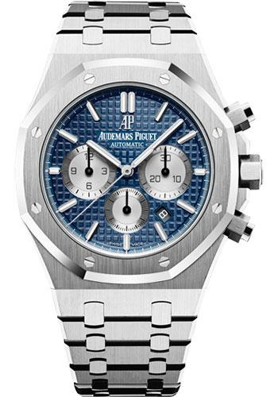

un audemars edición platinum exe del avatar hecho de platino alquimico agropecuario de las islas tiki tiki

audemars hecho con el mismo metal del que esta hecho el mjnoir de thor, este reloj no solo marca la hora sino que la controla B)

el limitado audemars invernal del invierno excarvado de un glaciar que no se derrite debido al descontrol del tiempo producido por este hapoteosico reloj